<div class="textcontainer typewriter-texture">
<p class="margin"> </p>
<h3>Week 7: Electronic Outputs</h3>
<p>I am pursuing the "Kachow" (final name TBD) project idea that I had proposed. The current goal for the final system will be two displays affixed one each to the front and rear dashboards, and a mobile app/site to communicate with the displays.</p>
<p>One of the most challenging aspects of the project is ensuring I can get speech to text (STT) working properly and can transmit that message to the LED display, so in addition to a fairly robust housing, this was the big thing to start to tackle in the MVP.</p>
<h4>1. Input, Output, and Housing/Enclosure</h4>
<h5>Input</h5>
<p>The input device for my MVP is the microphone on a smartphone. The smartphone also will perform speech to text processing before transmitting the message via wireless signal to an ESP32 microcontroller. Additional inputs for the final version will be buttons on each of the displays to power on and off the devices (as I hope to use rechargeable batteries). For the MVP I had originally considered using an I2S MEMS microphone and performing the STT processing on the microcontroller, but as Nathan noted, a library capable of this would require significant compute, on the order of a Raspberry Pi, so would not be practical. I opted for an ESP32 Devkit V1 for its WiFi capabilities. Additionally, given that I want to end up using a phone app, it would be better to start with that as opposed to trying to wrangle with the I2S.</p>
<h5>Output</h5>
<p>The output device is a 64x8 LED display. I purchased two 32x8 <a href="https://www.analog.com/media/en/technical-documentation/data-sheets/max7219-max7221.pdf" target="_blank">MAX7219</a> displays and soldered wires from the end of one to another to daisy chain the display.</p>
<p>For housing, I opted to laser cut a plywood box, as I will likely end up milling the final housing, but I do not have training on the CNC mill yet. I measured the soldered display, as well as the ESP32 and the USB-C cord I was using for it to incorporate those measurements in the housing. To hold the box together I used finger joints along with a healthy amount of gorilla glue.</p>
<p>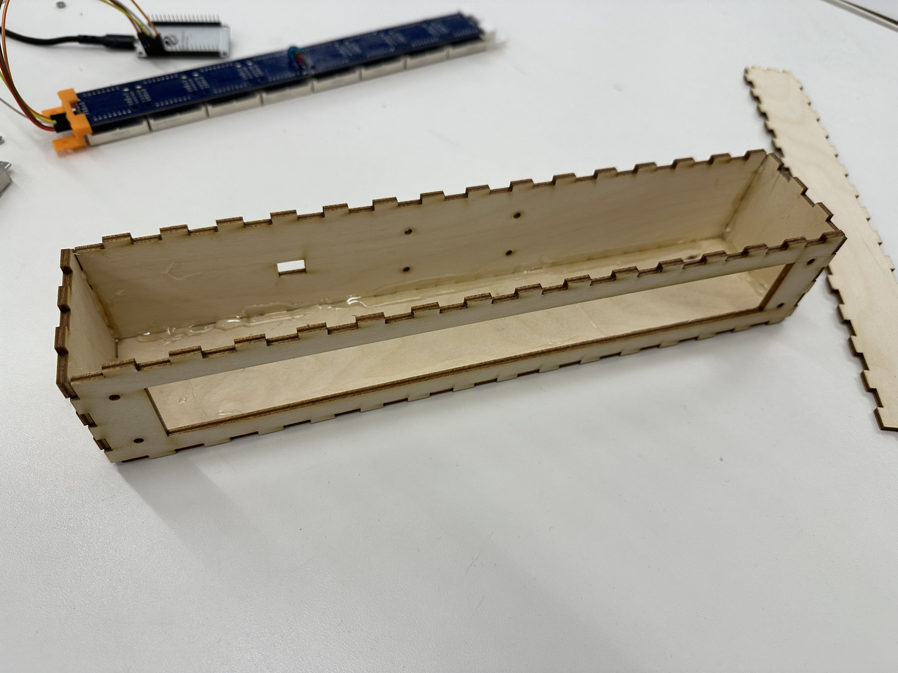</p>
<p>To hold the display in place within the housing, I opted to 3D print clamps that I could slide onto the ends of the display and then affix with nuts and M3 8mm bolts to the housing. I opted to use M3 25mm bolts to sufficiently hold the ESP32 in place, but did not 3D print additional support, as I might switch microcontrollers. For the clamps, I had to perform very precise measurements and went through multiple iterations before ending up with a design that would fit the display and leave room for the pins.</p>
<p>The iterations:</p>
<p>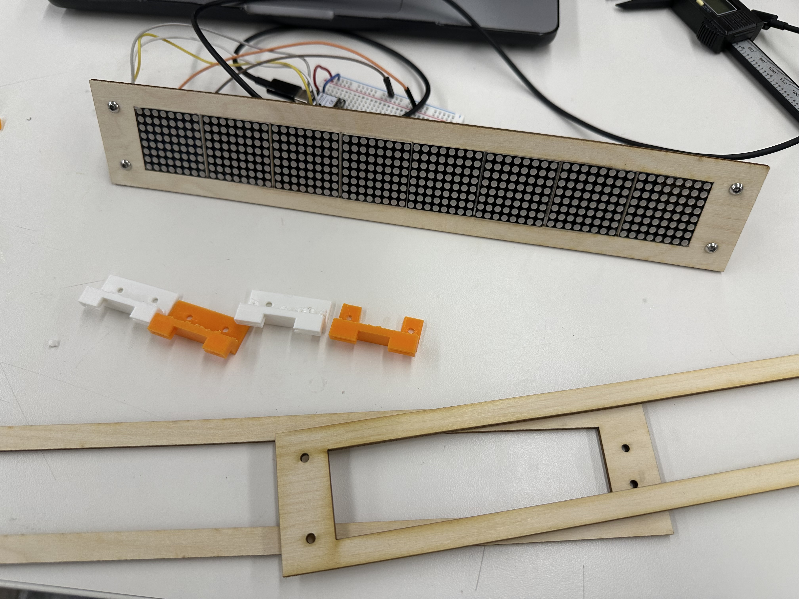</p>
<p>The final:</p>
<p>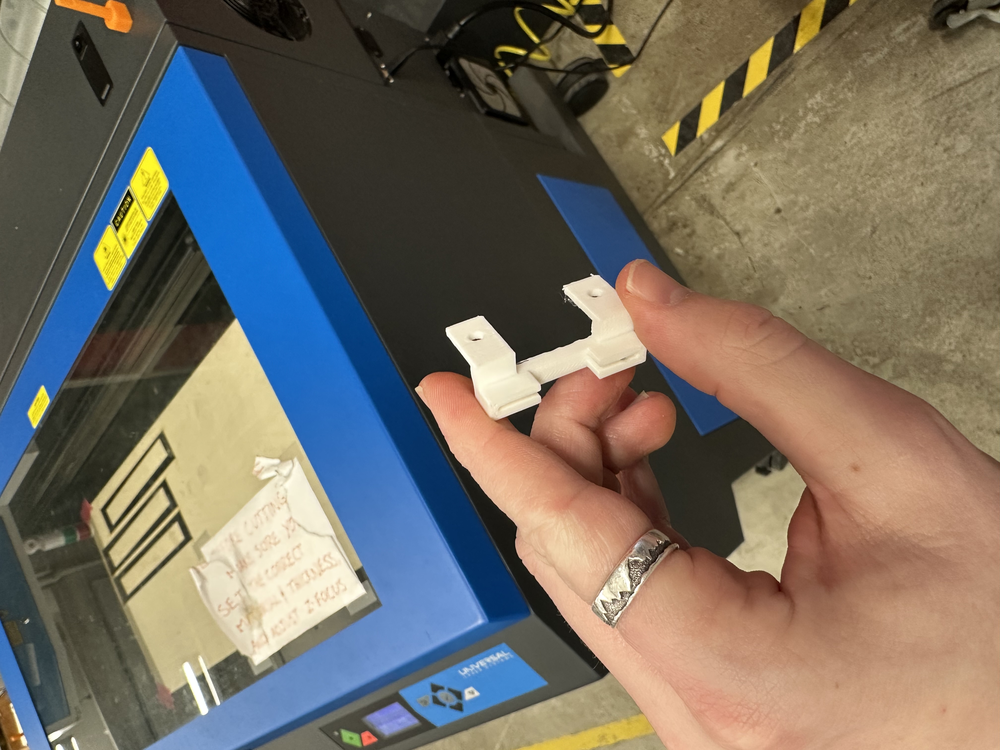</p>
<div style="width:100%; height:60vh; max-height:600px;">
<iframe
id="vs_iframe"
src="https://www.viewstl.com/?embedded&url=https://calebcapoccia.github.io/ps70/07_outputs/mvp_clamps.stl"
style="border:0;margin:0;width:100%;height:100%;"
loading="lazy">
</iframe>
</div>
<p>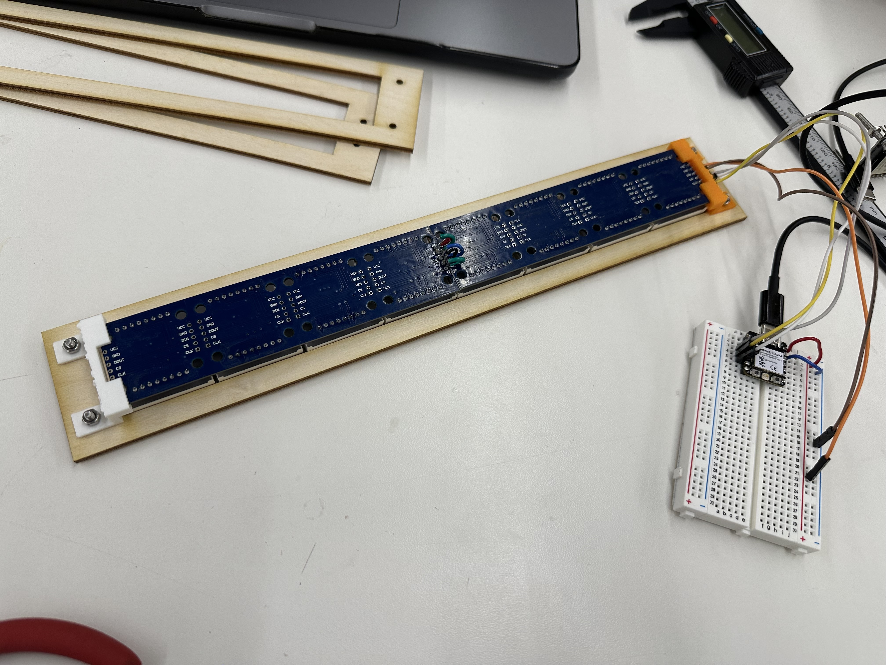</p>
<p>In the final product, I might want clamps for additional support in the center of the display, but these were sufficient for the MVP.</p>
<p>After constructing the box, it was time to start programming!</p>
<p>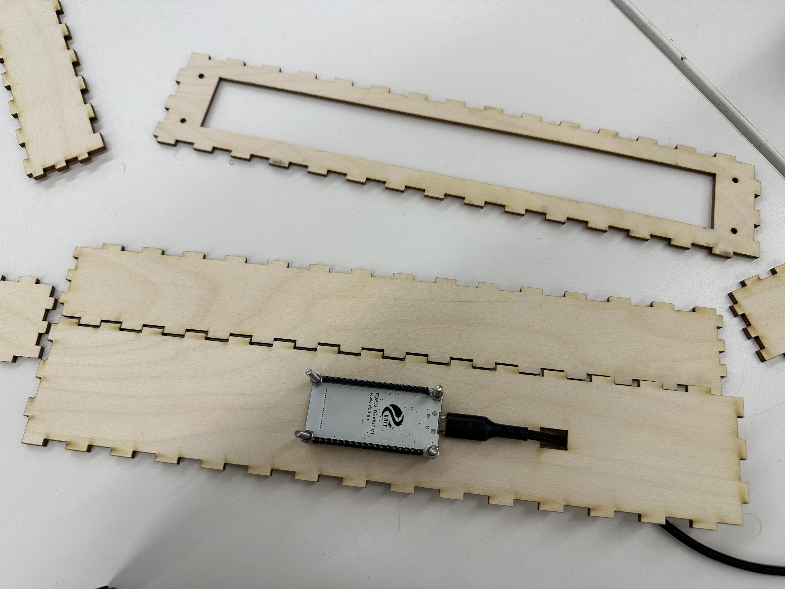</p>
<p>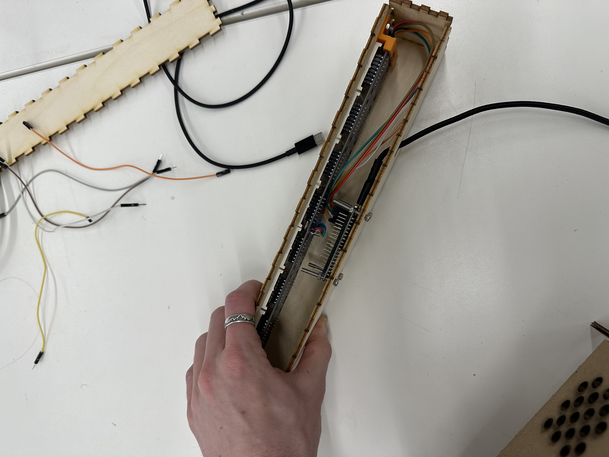</p>
<p>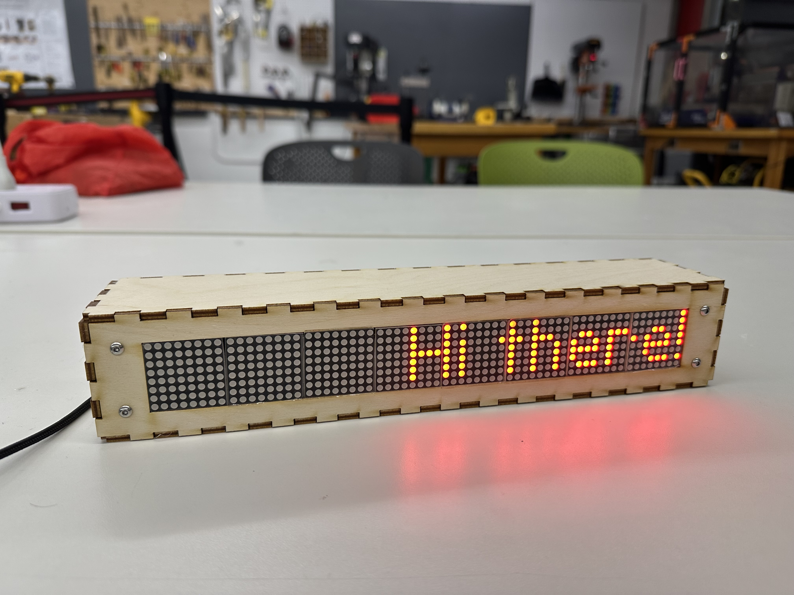</p>
<p class="margin"> </p>
<div class="flexrow">
<a id="btn" href="./mvp_clamps.stl" download>Download Clamp STL File
</a>
</div>
<p class="margin"> </p>
<p class="margin"> </p>
<div class="flexrow">
<a id="btn" href="./mvp.f3d" download>Download Fusion Housing File
</a>
</div>
<p class="margin"> </p>
<h4>2. Programming</h4>
<p>The programming portion of the MVP is made up of both the microcontroller programming, as well as the application that the acts as the intermediary between the user and the microcontroller. For communication and STT, I thought through a number of potential approaches, having a conversation with my friend Chet (ChatGPT). Given that my main goal for the MVP was to establish communication between the two devices, I opted to utilize the ESP32's ability to connect to WiFi and transmit information over a WiFi network. In the future, I might explore BLE (bluetooth) for communication. For STT, to keep things simple, I am using the built in speech recognition functionality within browsers. In the future, I might move to using Whisper, or another more robust STT library.</p>
<p>Jumping into the code, I first worked towards displaying a simple message on the display. I utilized some of my code from last week with the MAX7219. For both parts of the codebase, Chet helped with building some of the scaffolding, but then I made further modifications and made sure that at each step of the iteration process I understood how everything worked. Below is the full MVP Arduino and HTML code. I will break down different elements of the code to discuss the design decisions and iterations I went through.</p>
<h5>Arduino</h5>
<pre><code><span class="keyword">#include</span> <span class="string">"MD_Parola.h"</span>
<span class="keyword">#include</span> <span class="string">"MD_MAX72XX.h"</span>
<span class="keyword">#include</span> <span class="string">"SPI.h"</span>
<span class="keyword">#include</span> <span class="string"><WiFi.h></span>
<span class="keyword">#include</span> <span class="string"><WebServer.h></span>
<span class="keyword">#include</span> <span class="string"><ESPmDNS.h></span>
<span class="keyword">#define</span> HARDWARE_TYPE MD_MAX72XX::FC16_HW
<span class="keyword">#define</span> MAX_DEVICES <span class="number">8</span>
<span class="comment">// Define pins</span>
<span class="keyword">const</span> <span class="keyword">int</span> dataPin = <span class="number">15</span>;
<span class="keyword">const</span> <span class="keyword">int</span> csPin = <span class="number">2</span>;
<span class="keyword">const</span> <span class="keyword">int</span> clkPin = <span class="number">4</span>;
<span class="comment">// WiFi/Hotspot with password</span>
<span class="keyword">const</span> <span class="keyword">char</span>\* ssid = <span class="string">"[WIFI-NAME]"</span>;
<span class="keyword">const</span> <span class="keyword">char</span>\* password = <span class="string">"[WIFI-PASSWORD]"</span>;
<span class="keyword">unsigned long</span> wifiStartTime;
<span class="keyword">bool</span> wifiConnecting = <span class="keyword">true</span>;
<span class="keyword">bool</span> wifiReady = <span class="keyword">false</span>;
<span class="keyword">const</span> <span class="keyword">unsigned long</span> wifiTimeout = <span class="number">30000</span>; <span class="comment">// 30 seconds</span>
<span class="type">String</span> currentMessage = <span class="string">"Booting!"</span>;
<span class="keyword">uint16_t</span> numScrolls = <span class="number">1</span>;
<span class="keyword">uint16_t</span> completedScrolls = <span class="number">0</span>;
<span class="keyword">uint16_t</span> currentPause = <span class="number">0</span>;
<span class="keyword">uint16_t</span> currentSpeed = <span class="number">25</span>;
<span class="keyword">bool</span> scrolling = <span class="keyword">false</span>;
<span class="keyword">bool</span> incomingMessage = <span class="keyword">false</span>;
<span class="keyword">class</span> <span class="type">LedMatrix</span> {
<span class="type">MD_Parola</span> display;
<span class="keyword">char</span> messageBuffer[<span class="number">300</span>]; <span class="comment">// Message buffer to persist message while scrolling</span>
<span class="keyword">public</span>:
<span class="function">LedMatrix</span>(<span class="keyword">uint8_t</span> dataPin, <span class="keyword">uint8_t</span> clkPin, <span class="keyword">uint8_t</span> csPin)
: <span class="function">display</span>(HARDWARE_TYPE, dataPin, clkPin, csPin, MAX_DEVICES) {}
<span class="keyword">void</span> <span class="function">begin</span>() {
display.<span class="function">begin</span>();
display.<span class="function">setIntensity</span>(<span class="number">8</span>);
display.<span class="function">displayClear</span>();
display.<span class="function">setTextAlignment</span>(PA_RIGHT);
}
<span class="comment">// Scrolls 'message' at 'speed' with 'pause' in between</span>
<span class="keyword">void</span> <span class="function">startScroll</span>(<span class="keyword">const</span> <span class="type">String</span>& message, <span class="keyword">uint16_t</span> speed, <span class="keyword">uint16_t</span> pause) {
message.<span class="function">toCharArray</span>(messageBuffer, <span class="keyword">sizeof</span>(messageBuffer));
display.<span class="function">displayClear</span>();
display.<span class="function">displayText</span>(messageBuffer, PA_LEFT, speed, pause, PA_SCROLL_LEFT, PA_SCROLL_LEFT);
}
<span class="comment">// Returns true if the display is animating</span>
<span class="keyword">bool</span> <span class="function">animate</span>() {
<span class="keyword">return</span> display.<span class="function">displayAnimate</span>();
}
<span class="comment">// Resets display</span>
<span class="keyword">void</span> <span class="function">reset</span>() {
display.<span class="function">displayReset</span>();
}
<span class="comment">// Clears display</span>
<span class="keyword">void</span> <span class="function">clear</span>() {
display.<span class="function">displayClear</span>();
}
};
<span class="type">LedMatrix</span> ledDisplay(dataPin, clkPin, csPin);
<span class="type">WebServer</span> server(<span class="number">80</span>);
<span class="keyword">void</span> <span class="function">handleRoot</span>() {
server.<span class="function">sendHeader</span>(<span class="string">"Access-Control-Allow-Origin"</span>, <span class="string">"*"</span>);
server.<span class="function">send</span>(<span class="number">200</span>, <span class="string">"text/plain"</span>, <span class="string">"ESP32 is running"</span>);
}
<span class="keyword">void</span> <span class="function">handleMessage</span>() {
server.<span class="function">sendHeader</span>(<span class="string">"Access-Control-Allow-Origin"</span>, <span class="string">"*"</span>);
<span class="keyword">if</span> (!server.<span class="function">hasArg</span>(<span class="string">"text"</span>)) {
server.<span class="function">send</span>(<span class="number">400</span>, <span class="string">"text/plain"</span>, <span class="string">"Missing ?text=..."</span>);
<span class="keyword">return</span>;
}
currentMessage = server.<span class="function">arg</span>(<span class="string">"text"</span>);
<span class="keyword">if</span> (server.<span class="function">hasArg</span>(<span class="string">"repeat"</span>)) {
numScrolls = <span class="function">max</span>(<span class="number">1L</span>, server.<span class="function">arg</span>(<span class="string">"repeat"</span>).<span class="function">toInt</span>());
} <span class="keyword">else</span> {
numScrolls = <span class="number">1</span>;
}
<span class="keyword">if</span> (server.<span class="function">hasArg</span>(<span class="string">"pause"</span>)) {
currentPause = <span class="function">max</span>(<span class="number">0L</span>, server.<span class="function">arg</span>(<span class="string">"pause"</span>).<span class="function">toInt</span>());
} <span class="keyword">else</span> {
currentPause = <span class="number">0</span>;
}
<span class="keyword">if</span> (server.<span class="function">hasArg</span>(<span class="string">"speed"</span>)) {
currentSpeed = <span class="function">max</span>(<span class="number">1L</span>, server.<span class="function">arg</span>(<span class="string">"speed"</span>).<span class="function">toInt</span>());
} <span class="keyword">else</span> {
currentSpeed = <span class="number">50</span>;
}
completedScrolls = <span class="number">0</span>;
incomingMessage = <span class="keyword">true</span>;
server.<span class="function">send</span>(<span class="number">200</span>, <span class="string">"text/plain"</span>, <span class="string">"Message received"</span>);
}
<span class="keyword">void</span> <span class="function">setup</span>() {
Serial.<span class="function">begin</span>(<span class="number">9600</span>);
ledDisplay.<span class="function">begin</span>(); <span class="comment">// Start LED</span>
<span class="comment">// Start WiFi connection</span>
WiFi.<span class="function">begin</span>(ssid, password);
Serial.<span class="function">println</span>(<span class="string">"Connecting to Wi-Fi"</span>);
wifiStartTime = <span class="function">millis</span>();
}
<span class="keyword">void</span> <span class="function">completeWifiSetup</span>() {
wifiConnecting = <span class="keyword">false</span>;
Serial.<span class="function">println</span>(<span class="string">"Connected!"</span>);
Serial.<span class="function">println</span>(WiFi.<span class="function">localIP</span>());
wifiReady = <span class="keyword">true</span>;
<span class="keyword">if</span> (MDNS.<span class="function">begin</span>(<span class="string">"cardisplay"</span>)) {
Serial.<span class="function">println</span>(<span class="string">"mDNS responder started"</span>);
} <span class="keyword">else</span> {
Serial.<span class="function">println</span>(<span class="string">"Error setting up mDNS"</span>);
}
server.<span class="function">on</span>(<span class="string">"/"</span>, handleRoot);
server.<span class="function">on</span>(<span class="string">"/message"</span>, handleMessage);
server.<span class="function">begin</span>();
ledDisplay.<span class="function">startScroll</span>(currentMessage, currentSpeed, currentPause);
scrolling = <span class="keyword">true</span>;
}
<span class="keyword">void</span> <span class="function">loop</span>() {
<span class="comment">// Try connecting to wifi</span>
<span class="keyword">if</span> (wifiConnecting) {
<span class="keyword">if</span> (WiFi.<span class="function">status</span>() == WL_CONNECTED) {
<span class="function">completeWifiSetup</span>();
}
<span class="keyword">else if</span> (<span class="function">millis</span>() - wifiStartTime > wifiTimeout) {
wifiConnecting = <span class="keyword">false</span>;
Serial.<span class="function">println</span>(<span class="string">"WiFi connection failed (timeout)"</span>);
}
}
<span class="comment">// If already connected, perform server actions</span>
<span class="keyword">if</span> (wifiReady) {
server.<span class="function">handleClient</span>();
}
<span class="comment">// Wait for current scroll to finish before displaying new message</span>
<span class="keyword">if</span> (incomingMessage && !scrolling) {
completedScrolls = <span class="number">0</span>;
ledDisplay.<span class="function">startScroll</span>(currentMessage, currentSpeed, currentPause);
incomingMessage = <span class="keyword">false</span>;
scrolling = <span class="keyword">true</span>;
}
<span class="keyword">else if</span> (scrolling) {
<span class="keyword">if</span> (ledDisplay.<span class="function">animate</span>()) {
completedScrolls++;
<span class="comment">// Reset once we've completed all scrolls</span>
<span class="keyword">if</span> (completedScrolls < numScrolls) {
ledDisplay.<span class="function">reset</span>();
} <span class="keyword">else</span> {
ledDisplay.<span class="function">clear</span>();
scrolling = <span class="keyword">false</span>;
}
}
}
}
</code></pre>
<h5>HTML & CSS</h5>
<p><strong>mvp.html</strong></p>
<pre><code><span class="keyword"><!DOCTYPE html></span>
<span class="keyword"><html</span> lang=<span class="string">"en"</span><span class="keyword">></span>
<span class="keyword"><head></span>
<span class="keyword"><meta</span> charset=<span class="string">"UTF-8"</span> />
<span class="keyword"><meta</span> name=<span class="string">"viewport"</span> content=<span class="string">"width=device-width, initial-scale=1.0"</span> />
<span class="keyword"><title></span>Car Display Control<span class="keyword"></title></span>
<span class="keyword"><link</span> rel=<span class="string">"stylesheet"</span> href=<span class="string">"mvp.css"</span> />
<span class="keyword"></head></span>
<span class="keyword"><body></span>
<span class="keyword"><h1></span>Car Display Control<span class="keyword"></h1></span>
<span class="keyword"><button</span> id=<span class="string">"startBtn"</span><span class="keyword">></span>Speak<span class="keyword"></button></span>
<span class="keyword"><label></span>Message<span class="keyword"></label></span>
<span class="keyword"><input</span> type=<span class="string">"text"</span> id=<span class="string">"textInput"</span> placeholder=<span class="string">"Type message here"</span> />
<span class="keyword"><label></span>ESP32 Address<span class="keyword"></label></span>
<span class="keyword"><input</span> type=<span class="string">"text"</span> id=<span class="string">"hostInput"</span> value=<span class="string">"cardisplay.local"</span> placeholder=<span class="string">"cardisplay.local or IP"</span> />
<span class="keyword"><label></span>Repeat Count<span class="keyword"></label></span>
<span class="keyword"><input</span> type=<span class="string">"number"</span> id=<span class="string">"repeatInput"</span> value=<span class="string">"1"</span> min=<span class="string">"1"</span> />
<span class="keyword"><label></span>Pause (ms)<span class="keyword"></label></span>
<span class="keyword"><input</span> type=<span class="string">"number"</span> id=<span class="string">"pauseInput"</span> value=<span class="string">"0"</span> min=<span class="string">"0"</span> />
<span class="keyword"><label></span>Speed<span class="keyword"></label></span>
<span class="keyword"><input</span> type=<span class="string">"number"</span> id=<span class="string">"speedInput"</span> value=<span class="string">"25"</span> min=<span class="string">"1"</span> />
<span class="keyword"><button</span> id=<span class="string">"sendBtn"</span><span class="keyword">></span>Send<span class="keyword"></button></span>
<span class="keyword"><p</span> id=<span class="string">"status"</span><span class="keyword">></span>Status: idle<span class="keyword"></p></span>
<span class="keyword"><p</span> id=<span class="string">"output"</span><span class="keyword">></span>Transcript will appear here.<span class="keyword"></p></span>
<span class="keyword"><script></span>
<span class="keyword">const</span> ESP32_HOST = <span class="string">"cardisplay.local"</span>;
<span class="keyword">const</span> startBtn = document.<span class="function">getElementById</span>(<span class="string">"startBtn"</span>);
<span class="keyword">const</span> sendBtn = document.<span class="function">getElementById</span>(<span class="string">"sendBtn"</span>);
<span class="keyword">const</span> statusEl = document.<span class="function">getElementById</span>(<span class="string">"status"</span>);
<span class="keyword">const</span> outputEl = document.<span class="function">getElementById</span>(<span class="string">"output"</span>);
<span class="keyword">const</span> hostInput = document.<span class="function">getElementById</span>(<span class="string">"hostInput"</span>);
<span class="keyword">const</span> textInput = document.<span class="function">getElementById</span>(<span class="string">"textInput"</span>);
<span class="keyword">const</span> repeatInput = document.<span class="function">getElementById</span>(<span class="string">"repeatInput"</span>);
<span class="keyword">const</span> pauseInput = document.<span class="function">getElementById</span>(<span class="string">"pauseInput"</span>);
<span class="keyword">const</span> speedInput = document.<span class="function">getElementById</span>(<span class="string">"speedInput"</span>);
<span class="keyword">async function</span> <span class="function">sendToESP32</span>(message) {
<span class="keyword">const</span> host = hostInput.value || <span class="string">"cardisplay.local"</span>;
<span class="keyword">const</span> repeat = repeatInput.value || <span class="number">1</span>;
<span class="keyword">const</span> pause = pauseInput.value || <span class="number">0</span>;
<span class="keyword">const</span> speed = speedInput.value || <span class="number">25</span>;
<span class="keyword">const</span> params = <span class="keyword">new</span> <span class="function">URLSearchParams</span>({
text: message,
repeat: repeat,
pause: pause,
speed: speed
});
statusEl.textContent = <span class="string">"Status: sending..."</span>;
<span class="keyword">try</span> {
<span class="keyword">const</span> response = <span class="keyword">await</span> <span class="function">fetch</span>(
<span class="string">`http://</span>${host}<span class="string">/message?</span>${params.<span class="function">toString</span>()}<span class="string">`</span>
);
<span class="keyword">if</span> (!response.ok) {
<span class="keyword">throw new</span> <span class="function">Error</span>(<span class="string">"HTTP error "</span> + response.status);
}
<span class="keyword">const</span> text = <span class="keyword">await</span> response.<span class="function">text</span>();
console.<span class="function">log</span>(text);
statusEl.textContent = <span class="string">"Status: sent successfully"</span>;
} <span class="keyword">catch</span> (err) {
console.<span class="function">error</span>(err);
statusEl.textContent = <span class="string">"Status: failed to send"</span>;
}
}
<span class="comment">// Manual send</span>
sendBtn.<span class="function">addEventListener</span>(<span class="string">"click"</span>, () => {
<span class="keyword">const</span> message = textInput.value;
<span class="keyword">if</span> (!message) <span class="keyword">return</span>;
<span class="function">sendToESP32</span>(message);
});
<span class="comment">// Speech recognition</span>
<span class="keyword">const</span> SpeechRecognition =
window.SpeechRecognition || window.webkitSpeechRecognition;
<span class="keyword">if</span> (!SpeechRecognition) {
statusEl.textContent = <span class="string">"Speech recognition not supported."</span>;
startBtn.disabled = <span class="keyword">true</span>;
} <span class="keyword">else</span> {
<span class="keyword">const</span> recognition = <span class="keyword">new</span> <span class="function">SpeechRecognition</span>();
recognition.lang = <span class="string">"en-US"</span>;
recognition.interimResults = <span class="keyword">false</span>;
recognition.continuous = <span class="keyword">false</span>;
startBtn.<span class="function">addEventListener</span>(<span class="string">"click"</span>, () => {
outputEl.textContent = <span class="string">""</span>;
statusEl.textContent = <span class="string">"Listening..."</span>;
startBtn.textContent = <span class="string">"Listening..."</span>;
startBtn.disabled = <span class="keyword">true</span>;
recognition.<span class="function">start</span>();
});
recognition.onresult = (event) => {
<span class="keyword">const</span> transcript = event.results[<span class="number">0</span>][<span class="number">0</span>].transcript;
outputEl.textContent = transcript;
textInput.value = transcript;
startBtn.textContent = <span class="string">"Speak"</span>;
startBtn.disabled = <span class="keyword">false</span>;
<span class="function">sendToESP32</span>(transcript);
};
recognition.onerror = (event) => {
statusEl.textContent = <span class="string">`Error: </span>${event.error}<span class="string">`</span>;
startBtn.textContent = <span class="string">"Speak"</span>;
startBtn.disabled = <span class="keyword">false</span>;
};
recognition.onend = () => {
startBtn.textContent = <span class="string">"Speak"</span>;
startBtn.disabled = <span class="keyword">false</span>;
};
}
<span class="keyword"></script></span>
<span class="keyword"></body></span>
<span class="keyword"></html></span>
</code></pre>
<p><strong>mvp.css</strong></p>
<pre><code><span class="keyword">body</span> {
<span class="keyword">font-family</span>: Arial, sans-serif;
<span class="keyword">padding</span>: <span class="number">24px</span>;
<span class="keyword">max-width</span>: <span class="number">600px</span>;
<span class="keyword">margin</span>: <span class="number">0</span> auto;
}
<span class="keyword">button</span> {
<span class="keyword">font-size</span>: <span class="number">18px</span>;
<span class="keyword">padding</span>: <span class="number">12px</span> <span class="number">20px</span>;
<span class="keyword">margin</span>: <span class="number">10px</span> <span class="number">0</span>;
<span class="keyword">cursor</span>: pointer;
<span class="keyword">width</span>: <span class="number">100%</span>;
}
<span class="keyword">input</span> {
<span class="keyword">font-size</span>: <span class="number">16px</span>;
<span class="keyword">padding</span>: <span class="number">8px</span>;
<span class="keyword">width</span>: <span class="number">100%</span>;
<span class="keyword">margin-bottom</span>: <span class="number">10px</span>;
}
<span class="keyword">label</span> {
<span class="keyword">font-weight</span>: bold;
<span class="keyword">display</span>: block;
<span class="keyword">margin-top</span>: <span class="number">10px</span>;
}
<span class="keyword">#status</span> {
<span class="keyword">color</span>: <span class="number">#555</span>;
<span class="keyword">margin-top</span>: <span class="number">10px</span>;
}
<span class="keyword">#output</span> {
<span class="keyword">min-height</span>: <span class="number">2em</span>;
<span class="keyword">padding</span>: <span class="number">12px</span>;
<span class="keyword">border</span>: <span class="number">1px</span> solid <span class="number">#ccc</span>;
<span class="keyword">border-radius</span>: <span class="number">8px</span>;
<span class="keyword">background</span>: <span class="number">#f8f8f8</span>;
<span class="keyword">margin-top</span>: <span class="number">10px</span>;
}
</code></pre>
<p>Similar to last week, I first got the LED display up and running for static text, but now with 64x8 instead of 32x8.</p>
<p>I then switched over to displayText in order to animate the message.</p>
<pre><code><span class="comment">// Scrolls 'message' at 'speed' with 'pause' in between</span>
<span class="keyword">void</span> <span class="function">startScroll</span>(<span class="keyword">const</span> <span class="type">String</span>& message, <span class="keyword">uint16_t</span> speed, <span class="keyword">uint16_t</span> pause) {
message.<span class="function">toCharArray</span>(messageBuffer, <span class="keyword">sizeof</span>(messageBuffer));
display.<span class="function">displayClear</span>();
display.<span class="function">displayText</span>(messageBuffer, PA_LEFT, speed, pause, PA_SCROLL_LEFT, PA_SCROLL_LEFT);
}
</code></pre>
<p>I needed to add a message buffer, because if we pass in a string and use it directly, it will use a copy that will only persist for the life of the function, so by storing it in a message buffer, we ensure it persists for the entirety of the displayText call.</p>
<p>I added a basic WiFi connection so that the Arduino can join a network and communicate with other devices, an mDNS to make it easier to communicate with the microcontroller, and an embedded HTTP server to take requests that would allow a phone to send messages.</p>
<p>I then spun up the basic HTML site, utilizing built in speech recognition on the browser (<code>const recognition = new SpeechRecognition();</code>), and then I added parameterized control so that I could pass in multiple parameters to control the speed, repeat count, and pause time in addition to the message itself. I deployed the HTML site on GitHub pages so that I could communicate with the ESP32 while on the same network. The STT and connection worked on my laptop, but it kept failing for both Chrome and Safari on my iPhone, despite enabling the in-browser STT.</p>
<p>After looking at the network logs in Safari developer mode, I noticed that the fetch call was failing due to access control checks. It's a mixed content issue because the GitHub page is HTTPS whereas the Arduino is HTTP.</p>
<p>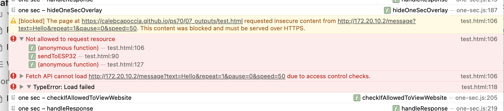</p>
<p>Because I will likely shift to another method of Wireless communication, instead of going down the route of signing an HTTPS certificate for the Arduino, I decided to host the HTML on server on my laptop.</p>
<h5>Running the Code</h5>
<ol>
<li>Connect laptop and phone to same WiFi / phone hotspot (for phone hotspot you may need to modify settings to maximize compatibility</li>
<li>Input the WiFi name and password into the Arduino code. Upload to the ESP32.</li>
<li>From within the 07_outputs folder, run the HTML site locally with <code>python3 -m http.server 8000</code></li>
<li>In another terminal window, check the laptop's IP on the WiFi/hotspot network with <code>ifconfig | grep "inet "</code></li>
<li>On the mobile browser, visit <code>http://[your-laptop-ip]:8000/mvp.html</code>
<ol>
<li>You will need to enable STT in browser when prompted</li>
</ol>
</li>
<li>Use the app!</li>
</ol>
<h4>3. Oscilloscope Readings</h4>
<p>Given that the MAX7219 is an <a href="https://learn.sparkfun.com/tutorials/serial-peripheral-interface-spi" target="_blank">SPI</a> device, it operates on a fixed clock. However, you can adjust the speed of the animation frames, so it operates on two timing levels. Looking at the <code>diplayText</code> method in the MD Parola library, it calls this library function using the <code>speed</code> parameter :</p>
<pre><code><span class="comment">/**
* Set identical IN and OUT animation frame speed for all zones.
*
* The speed of the display is the 'tick' time between animation frames. The lower this time
* the faster the animation; set it to zero to run as fast as possible.
*
* This method sets the IN and OUT animation speeds to be the same.
*
* \param speed the time, in milliseconds, between animation frames.
*/</span>
<span class="keyword">inline</span> <span class="keyword">void</span> <span class="function">setSpeed</span>(<span class="keyword">uint16_t</span> speed) { <span class="keyword">for</span> (<span class="keyword">uint8_t</span> i = <span class="number">0</span>; i < _numZones; i++) _Z[i].<span class="function">setSpeed</span>(speed);
</code></pre>
<p>For the oscilloscope, I hooked up to the CLK and GND pins on the device.</p>
<p>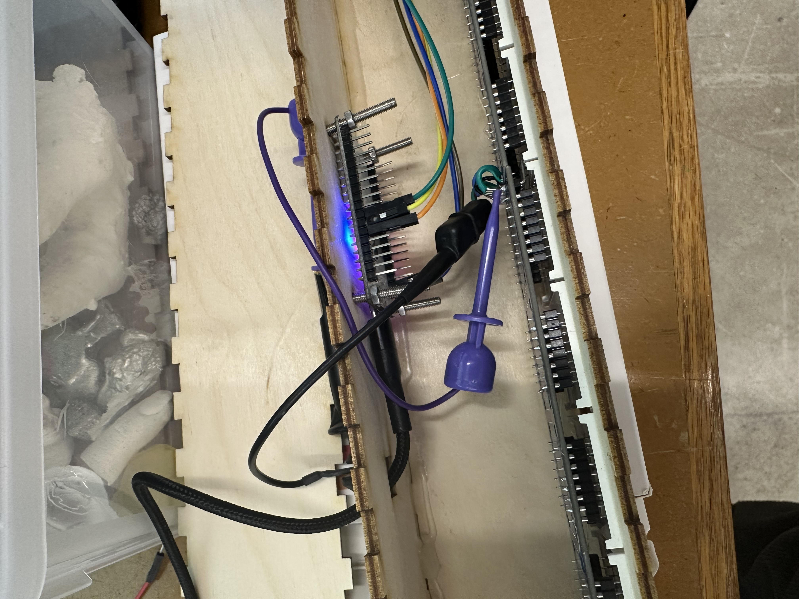</p>
<p>When sending a message, it looks like a bunch of voltage spikes, and looking at each of those in detail, each of those spikes is actually a burst of individual pulses.</p>
<p>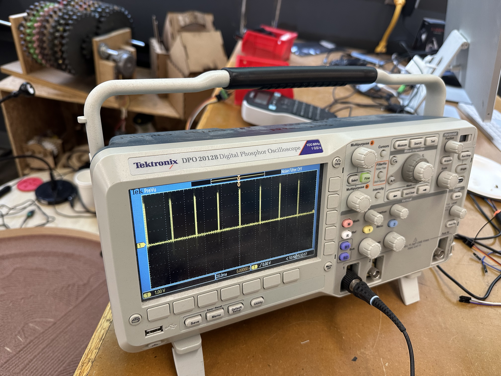</p>
<p>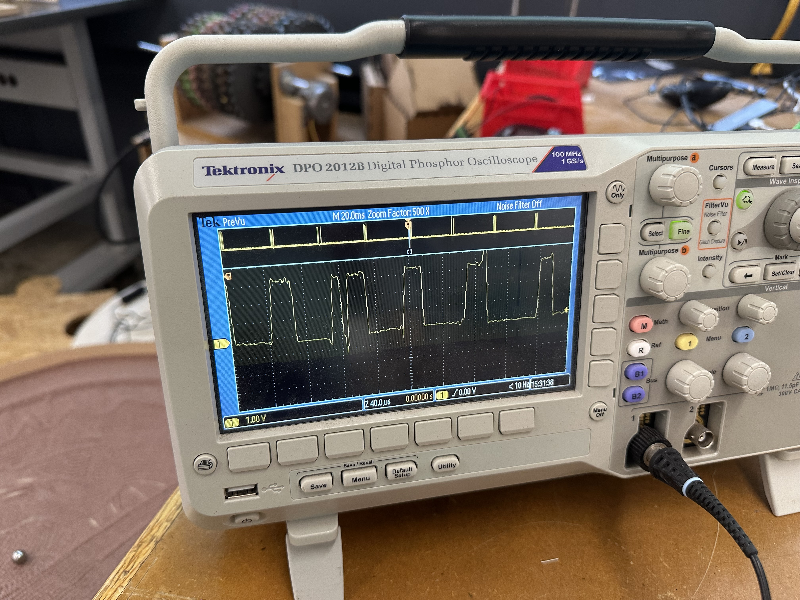</p>
<p>Playing around with different speeds, we can see that the speeds directly correspond in ms the time between the bursts, indicating that these bursts correspond to the animation frames, which makes sense based on the library we are working with.</p>
<p>For 50 ms:</p>
<p>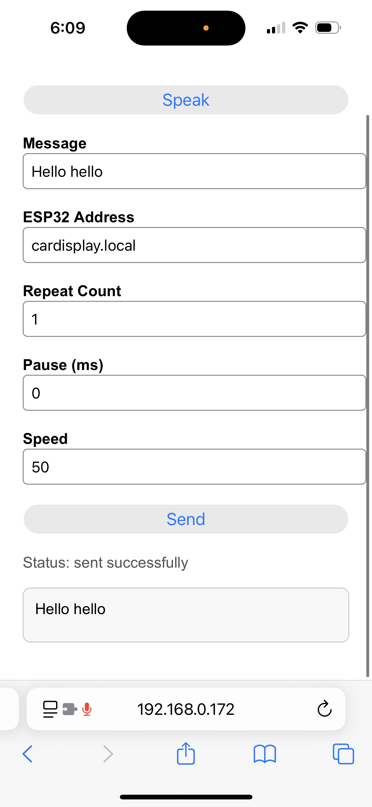</p>
<p>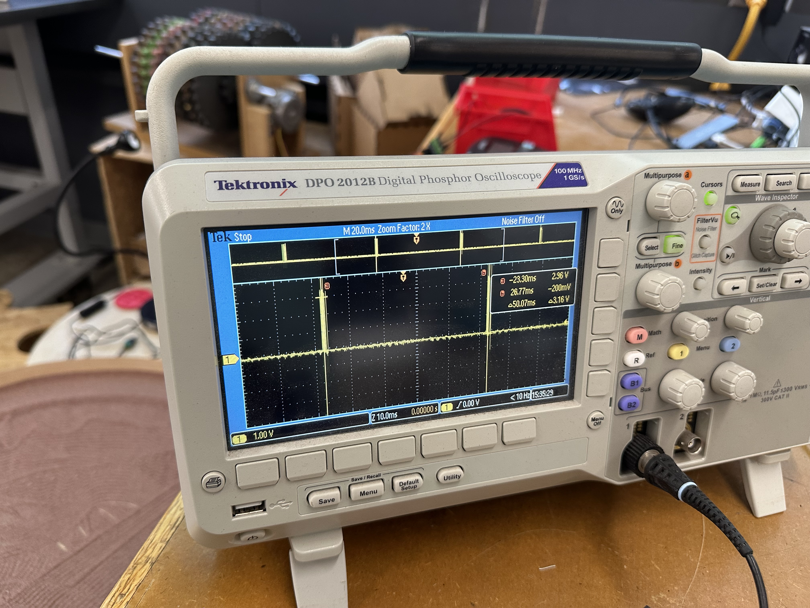</p>
<p>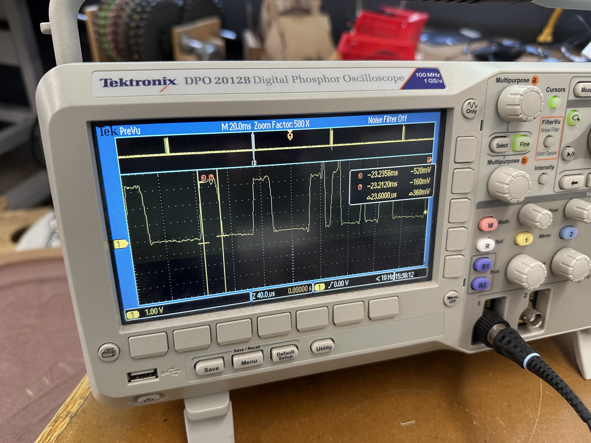</p>
<p>For 25 ms:</p>
<p>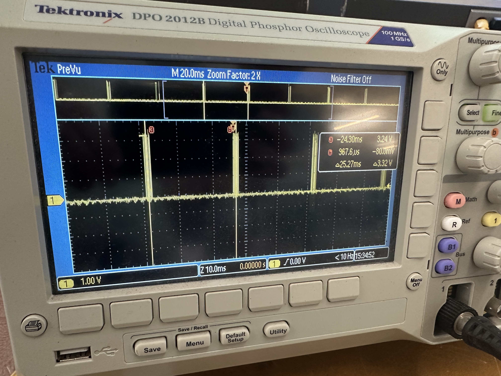</p>
<p>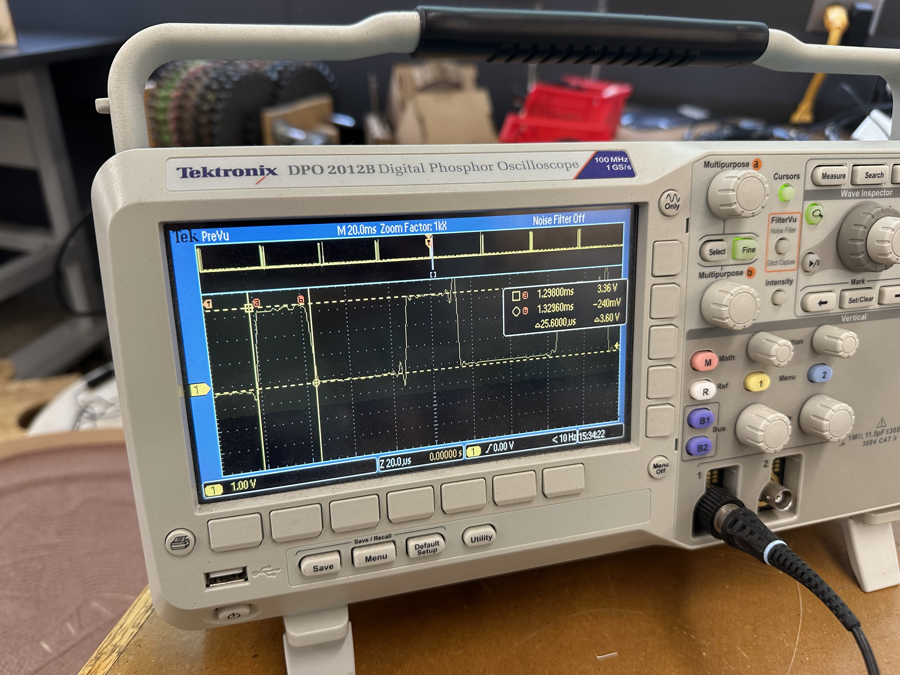</p>
<p>However, as we can see within bursts, the speed between pulses remains fairly constant at around 50us per bit. Thus, we can control the animation frame rate, but the SPI clock is fixed at 50 us per bit.</p>
<h4>4. Demo</h4>
<div style="padding:56.25% 0 0 0;position:relative;">
<iframe src="https://www.youtube.com/embed/VisRwon42es"
style="position:absolute;top:0;left:0;width:100%;height:100%;"
frameborder="0"
allow="accelerometer; autoplay; clipboard-write; encrypted-media; gyroscope; picture-in-picture"
allowfullscreen>
</iframe>
</div>
<p class="margin"> </p>
</div>